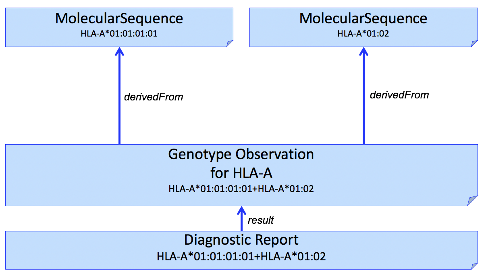
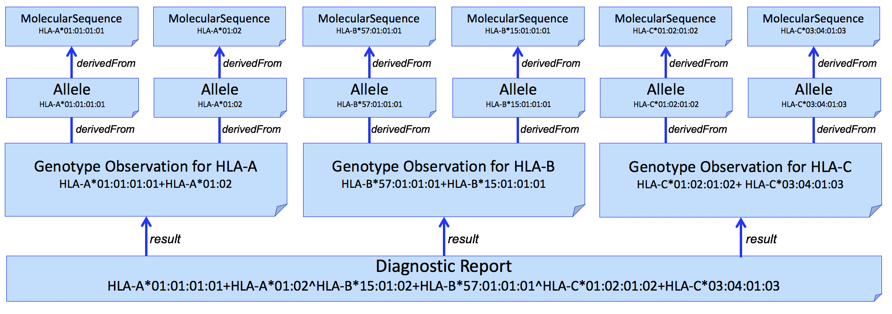

GenomicsReporting 0.3 - Continuous Build

The content in this section has not undergone work group review and may be significantly revised prior to the next ballot.
This section covers additional guidelines related to genetic assessments related to the histocompatibility and immunogenetics, include matching of donor and recipient tissue for donation, including bone marrow, organ and other tissue donations, and cellular therapy. In particular, it covers additional guidance related to reports dealing with HLA (Human Leukocyte Antigens) genotyping.
While not specifically profiled in this version of the IG, some additional constraints will typically apply to somatic profiles. Patient will typically be mandatory as transplant genomics is not relevant for environmental samples. Exceptions would include when de-identified samples are sent to a typing laboratory, and patient information is stored separately at an organization.
Human leukocyte antigen (HLA) genotyping is fundamental for research and clinical practice in immunogenetics and histocompatibility. Pointers to external locations refer to registered methods, raw NGS reads, and reference standards can be conveyed in this profile. Information about allele assignment including ambiguous results and the allele database used for assignments is stored in extensions.
The structure of the HLA typing report in this profile attempts to follow the principles outlined in the Minimum Information for ReportIng Next-generation sequence Genotyping (MIRING). These principles were identified through a series of meetings with international group of stakeholders in the application of Next Generation Sequencing (NGS) technology for genotyping the HLA and KIR loci as well as other immune-related loci (http://igdawg.org/ngs.html). MIRING describes eight principles, described in detail in Human Immunology. 2015 Dec; 76(12):954-962. These include detailed metadata about:
These principles were implemented in a technical specification by extending an existing XML based format for exchanging histocompatibility and immunogenetic genotyping data called Histoimmunogenetics Markup Language (HML) to include results from NGS methodologies. The resulting schema may be found in here. The National Marrow Donor Program (NMDP)/Be The Match uses this format for reporting HLA genotyping from potential donors and for patients needing stem cell transplants.
Both MIRING and HML were used to inform mapping data elements to FHIR resources such as Patient, Specimen, MolecularSequence, Genotype Observation, Haplotype Observation, and DiagnosticReport where possible.
The profiles for HLA genotyping have not yet been converted to align with the core profiles of this IG. This work will be completed prior to the August ballot cycle.
In a simple case, the Genomics Report (DiagnosticReport) refers to an Genotype Observation for each HLA gene. The HLA alleles found in the genotype are typically assigned to alleles found in the the Immuno Polymorphism Database (IPD) through the international ImMunoGeneTics (IMGT) project (found here) and preferably expressed as a Genotype List String (GLString) using a GLString Code.
If it is necessary to report the molecular sequence that was used to derive the Genotype Observation, MolecularSequence resources can be used. This is shown in Fig 1.
Figure 1
It is often desirable to identify sequence data that was used to derive individual HLA alleles. This can be done by adding another Observation to capture this, shown in Figure 2.

Figure 2
We use the Haplotype Observation for this purpose. In domains other than HLA (e.g. Pharmacogenomics), it is common to consider gene-level alleles as named haplotypes of a set of smaller variants (Variation Modelling Collaboration Data Model and Specification). This is not how the HLA community considers Haplotype, which is typically used to describe a set of gene-level alleles from different HLA genes that are found on the same DNA molecule. To be able to represent this latter description, this IG will need to consider how to represent "haplotypes of haplotypes."
This pattern can be extended to multiple HLA genes in a single report. An example for HLA-A, HLA-B, and HLA-C is shown in Figure 3.

Figure 3
And adding individual alleles...
Figure 4
HLA allele assignment is often ambiguous. Genotype ambiguity results from an inability to establish chromosomal phase between identified polymorphisms. Allele ambiguity results when the polymorphisms that distinguish alleles fall outside of the regions assessed by the genotyping system.
Allele ambiguity is often captured using NMDP Multiple Allele Codes. Because of limitations of this system, including introducing further ambiguity into the report, the GL String is preferred. This format uses a hierarchical set of operators to describe the relationships between alleles, lists of possible alleles, phased alleles, genotypes, lists of possible genotypes, and multilocus unphased genotypes, without losing typing information or increasing typing ambiguity. To use this format, the GL String Code system can be used, which embeds this GL String into a format containing the gene system, and version of the nomenclature used within the GL String.
For example, this valueCodeableConcept would be used to describe a genotype for HLA-B, based on the 3.31.0 release of the IMGT-IPD/HLA database, that is ambiguous for one of the alleles in the genotype (HLA-B*07:02:01:01/HLA-B*07:02:01:03), and unambiguous for the other (HLA-B*13:02:01:01).
<valueCodeableConcept>
<coding>
<system value="https://glstring.org"/>
<version value="1.0"/>
<code value="hla#3.31.0#HLA-B*07:02:01:01/HLA-B*07:02:01:03+HLA-B*13:02:01:01"/>
</coding>
</valueCodeableConcept>
TBD: Considerations for reporting Killer-cell immunoglobin like receptor (KIR) genes.
Implementation Guide © 2017+ HL7 International Clinical Genomics Work Group. Based on FHIR version (4.0.0). IG generated on Thu, Feb 21, 2019 11:08+0100.
Links: Table of Contents |
QA Report |
Version History |
 |
Propose a change
|
Propose a change